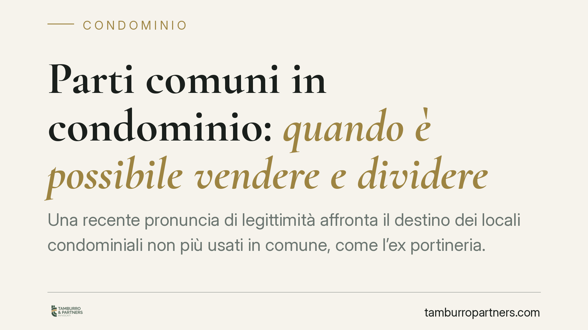

Parti comuni in condominio: quando è possibile vendere e dividere
Una recente pronuncia di legittimità affronta il destino dei locali condominiali non più usati in comune, come l'ex portineria. Il tema tocca un nodo delicato: quando il vincolo che rende un bene "comune" può considerarsi venuto meno e quali regole governano la sua vendita o divisione. La distinzione tra titolarità, destinazione e disponibilità è decisiva per amministratori e condòmini.

Il caso e il principio
La vicenda riguarda locali condominiali un tempo destinati a un uso comune – tipicamente l'alloggio della portineria – rimasti di fatto inutilizzati dopo la cessazione del servizio. La questione è se, venuto meno l'uso comune, quei locali possano essere alienati (venduti) o divisi tra i condòmini, e con quali maggioranze.
Per affrontarla occorre tenere distinti tre piani che spesso vengono confusi: la titolarità del bene (a chi appartiene), il vincolo di destinazione (a cosa serve in comune) e la disponibilità/divisibilità (se e come può essere ceduto o diviso). Sono profili autonomi: la cessazione dell'uso non incide automaticamente sulla titolarità né rende, di per sé, il bene liberamente vendibile.
Inquadramento normativo
Le parti comuni sono elencate, in via non tassativa, dall'art. 1117 c.c.: si tratta dei beni destinati all'uso comune dei condòmini in ragione del rapporto di accessorietà con le unità immobiliari di proprietà esclusiva.
Sul fronte della divisione, il riferimento è l'art. 1119 c.c., come modificato dalla L. 220/2012 (riforma del condominio). Nel testo vigente, le parti comuni «non sono soggette a divisione, a meno che la divisione possa farsi senza rendere più incomodo l'uso della cosa a ciascun condomino e con il consenso di tutti i partecipanti al condominio». La riforma ha quindi introdotto un requisito decisivo per il tema qui trattato: oltre al criterio del non maggior incomodo, è oggi necessario il consenso di tutti i partecipanti. Chi ragiona ancora sulla sola idoneità tecnica alla divisione trascura un presupposto che la legge ha reso centrale.
È opportuna una precisazione su un punto spesso dato per scontato. Si sostiene talvolta che, venuto meno il vincolo di destinazione, il bene «ricada» automaticamente nella comunione ordinaria disciplinata dagli artt. 1100 e seguenti c.c. Si tratta di una tesi ricostruttiva, non di un automatismo pacifico: parte della giurisprudenza di legittimità considera la comunione condominiale un regime autonomo, che non si trasforma da sé in comunione ordinaria per la sola cessazione di fatto dell'uso. La qualificazione va quindi verificata caso per caso, anche alla luce dei titoli e del regolamento condominiale.
Implicazioni pratiche
Per amministratori e condòmini il messaggio è duplice.
Primo: la dismissione o la vendita di un locale ex comune non è una decisione di ordinaria amministrazione né, in linea di principio, adottabile a maggioranza. Gli atti che dispongono dell'intera cosa comune – alienazione compresa – richiedono, in base ai principi generali richiamati anche dall'ultimo comma dell'art. 1108 c.c., il consenso di tutti i comproprietari. L'art. 1108 c.c. disciplina in maggioranza qualificata le innovazioni e gli atti eccedenti l'ordinaria amministrazione, ma per gli atti dispositivi dell'intero bene resta la regola dell'unanimità.
Secondo: la divisione segue oggi la regola dell'art. 1119 c.c. post-riforma, che pretende il consenso di tutti i partecipanti. Una delibera assembleare adottata a maggioranza per vendere o dividere un locale comune espone al concreto rischio di impugnazione e, nei casi di difetto di potere dispositivo, di nullità dell'atto.
È prudente non dare per acquisito alcun automatismo tra cessazione dell'uso, maggioranza assembleare e libera vendibilità: sono passaggi giuridicamente distinti, ciascuno con i propri presupposti.
Cosa fare in concreto
- Verificate i titoli: recuperate atto di provenienza, regolamento condominiale e planimetrie per accertare titolarità e natura del bene prima di qualsiasi iniziativa.
- Non deliberate a maggioranza atti dispositivi: per vendere o dividere il locale acquisite il consenso di tutti i condòmini, formalizzandolo per iscritto.
- Documentate la cessazione dell'uso comune: raccogliete prova che il servizio (es. portineria) sia effettivamente cessato, senza però trattarla come titolo automatico per la vendita.
- Distinguete divisione e alienazione: applicate l'art. 1119 c.c. alla divisione e i principi generali sull'unanimità agli atti di vendita, evitando di sovrapporre i regimi.
- Acquisite un parere prima di deliberare: un vaglio preventivo su maggioranze e presupposti riduce il rischio di impugnazioni e di nullità dell'atto.
---
Contributo informativo a cura di Tamburro & Partners - Avv. Giuseppe Tamburro. Non costituisce parere legale.
Ogni condominio ha una storia a sé.
Se gestisci un'amministrazione e vuoi un confronto su una specifica questione condominiale, scrivi allo studio. Ti rispondiamo entro un giorno lavorativo.